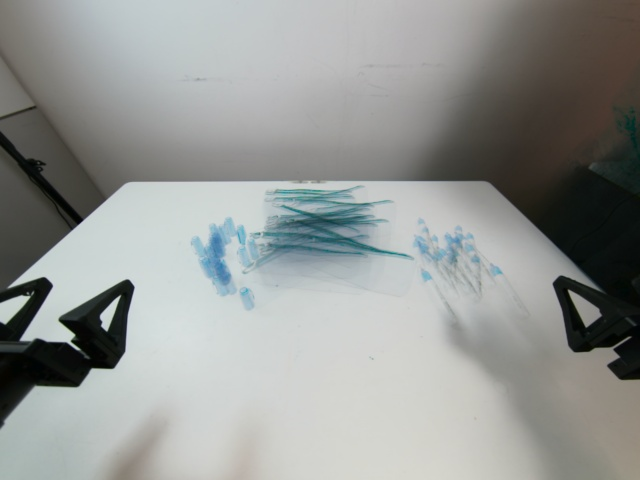
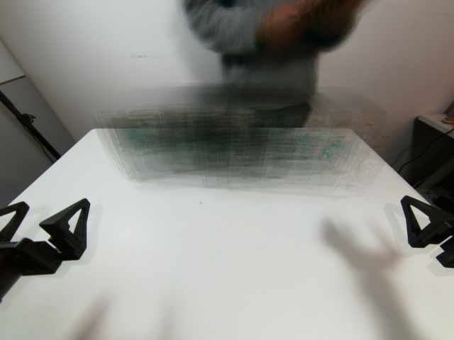
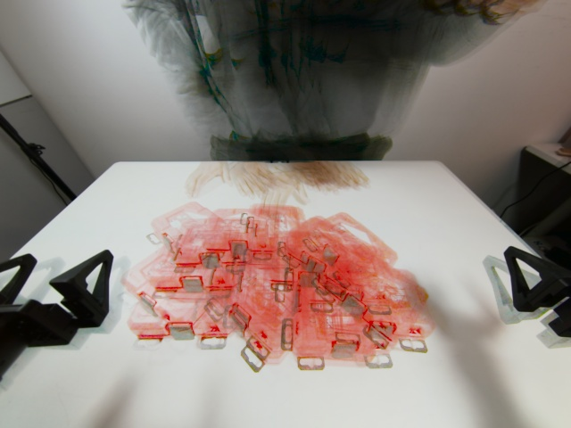
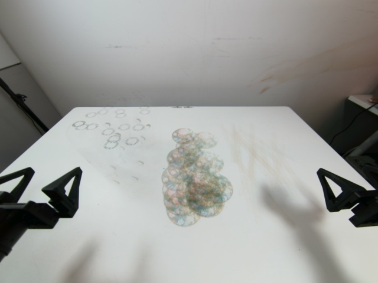
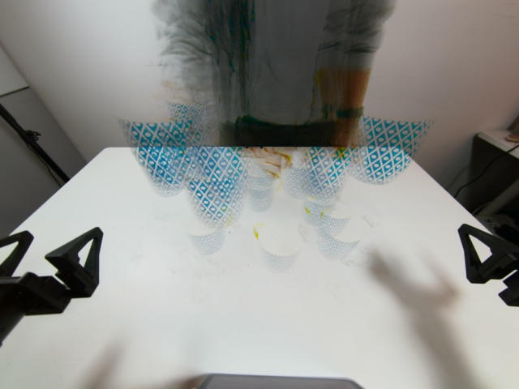
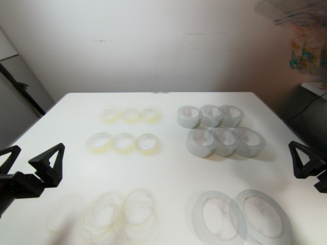
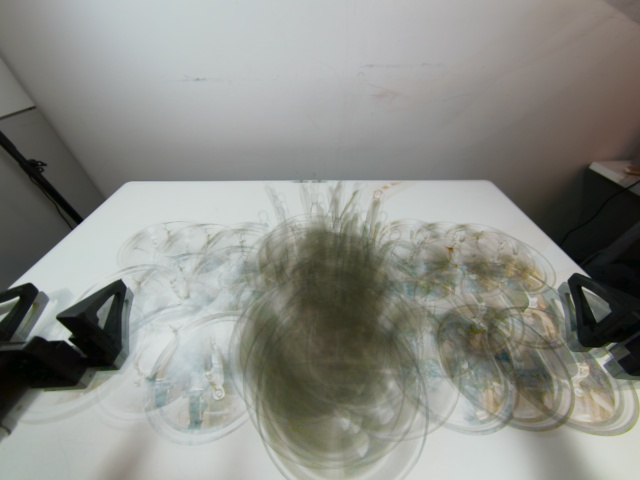
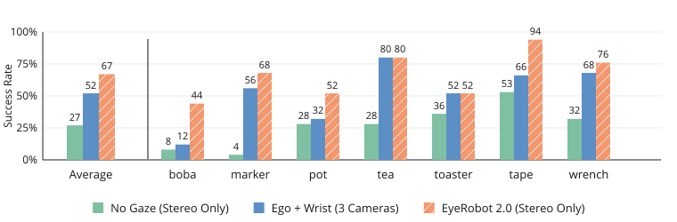
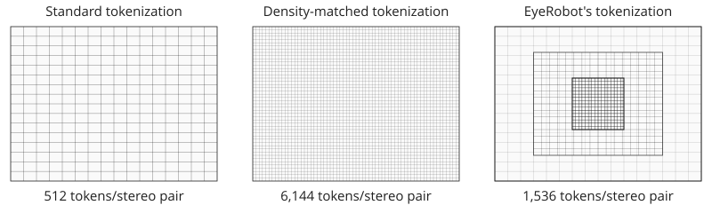
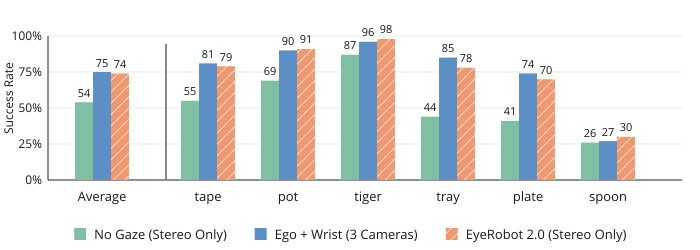

EyeRobot 2.0
Active Visual Fixation for Precise Manipulation without Wrist Cameras
1UC Berkeley 2Amazon FAR 3Stanford University
∗Equal contribution, random order
Do robots need wrist cameras?
Behavior cloning systems today overwhelmingly rely on wrist cameras for fine-grained manipulation. Why? Their high-resolution gripper-centric observations improve precision and spatial reasoning via a sort of physical attention where it matters. We believe that these benefits1 can be obtained from a human-inspired physical attention system: one using two active eyes to focus on areas of interest.
When most people think of active vision, they think of information seeking behaviors like moving your neck to get a better viewpoint. In this work we study a type of active vision more akin to information filtering. Given an already well-observable workspace, can active vision improve manipulation performance by focusing compute, attention, and representation capacity towards important parts of the scene? We borrow the biological term for this type of active vision: fixation.
All policies below are single-task and trained from scratch on less than an hour of teleop data, using only a fixed stereo camera for vision.
The robot learns to coordinate its eyes with reinforcement learning, no gaze supervision required! Take a look at the same rollouts from the policy's perspective.
Example eye behavior during autonomous execution.
Eye motion shown here was exactly what the policy looked at during execution. Concentric rectangles illustrate the model's foveated2 image processing, which allocates high resolution image tokens towards the center. Notice how the policy's gaze swivels to focus this high-res patch towards directions requiring precise visual understanding like inserting a straw. This behavior was never supervised and emerged through RL.
Experiments
Randomly sampled successful trials. Click here to browse all trial videos.
We compare against two strong baselines with the same architecture and trained on the exact same demonstrations as AVF3. The first baseline uses the RGB stereo inputs directly ("No Gaze"), and the second uses one stereo image along with two wrist-mounted cameras ("Ego + Wrist"). Note that both baselines have a significant observability advantage, since AVF's field of view is such that it cannot see the entire stereo image at once. Both baselines are provided a full coverage view of the table, and with wrist cameras two additional high-resolution viewpoints of the gripper.

Marker
Toaster
Wrench
Boba
Tea
Tape
PotCamera comparisons

Significantly outperforms passive stereo
AVF beats passive stereo by a large margin, in aggregate +40% success rate. This is unsurprising, ego-only camera systems tend to provide weak performance for fine-grained manipulation. Interestingly, by using the same input images with active fixation, we can recover the performance gap between wrist-camera and wrist-free policies. Passive stereo struggles with spatial understanding; learning about 3D servoing is harder from a static perspective than from a gripper-centric perspective like wrist cameras or fixated eyeballs.
It also lacks localized resolution necessary for precise tasks, particularly noticable in the near-0 performance on the marker task. Matching the resolution of AVF's fovea with uniform resolution would require over 10x the number of tokens.

AVF beats wrist cameras on occluded tasks
We intentionally collected some tasks which are hard to see from the YAM's wrist cameras. In these tasks (boba and pot lid), ego + wrist policies must rely solely on the ego-centric camera for useful information and so their performance collapses to about the same as static stereo. Different wrist camera designs like dual-cameras or fisheye views can alleviate these problems, but it's impossible to always maintain good observability. This also requires teleoperators to teleop the robot in an unnatural way, one that sometimes harms data quality because of unintuitive manipulation strategies required for observability.
Wrist camera viewpoints during boba and pot lid tasks. Grasping tools poses significant visibility challenges for wrist cameras.
AVF matches wrist cameras in tasks without tool occlusions
AVF matches or exceeds the performance of the wrist camera baseline even when their visibility is good.
Distractor objects
We evaluated 3 tasks with unseen distractor objects scattered throughout the workspace. Again, all trials use the exact same object positions to ensure comparability.
On eval trials with unseen distractors in the same configuration, ego + wrist policies often move towards the first object seen by the wrist cameras and get confused while AVF can ignore them.
Simulated Eval
We found it extremely helpful for project development to build a MuJoCo twin of the YAM arms for high-volume, low-noise evaluations. Our goal here was not sim-to-real transfer, but rather a clean simulation-only benchmark that replicates as closely as possible the real world pipeline. We built a VR teleoperation platform using the same GELLO leader arms as real teleop, and designed 6 tasks by importing assets from SAM-3D. Task stage success is labeled based on programatic physics checks.
We train models on these simulated-only tasks with the exact same method, hyperparameters, camera parameters, and robot positions as real; the method does not leverage any simulated information besides what is available in real.
Autonomous sim eval rollouts including eye motion

Ablations
TODO: find videos demonstrating weaknesses of ablations (maybe just show sankey?)
Stereo and foveated vision

Gaze-centric actions
Gaze analysis
What type of gaze patterns does AVF learn, and do they matter over naive baselines? To answer this,
TODO: generate gaze aggregate analysis plots somehow...
Implicit task segmentation
By analyzing gaze, in some tasks we can obtain task segmentation from the RL policy!
Does learned gaze beat naive baselines?
(idk if i like this necessarily since its sim only) but we have results showing learned gaze outperforms static gaze for any one object in the sim tasks
How it works
Compacting the action data manifold with fixation
Loosely speaking, there's only a few ways to make a neural net better: 1) improve the architecture or optimization dynamics to better interpolate your data, 2) increase data manifold coverage by using more data, or 3) increase data manifold coverage by making the manifold itself more compact. Of course this is extremely hand-wavey, but much of AVF's design is attempting the latter, reducing the complexity of the learning problem by representing manipulation relative to fixation4.
Step 1: Goal-conditioned gaze
TODO: describe stereo virtual eye rendering
We first train a gaze policy that continously servos the 2 eyes to fixate on a target object in 3D.

Gaze induced by conditioning on yellow vs gray tape. The fixation point is controlled by the RL policy, and the two eyes converge on this 3D point to provide the model high-resolution stereo inputs.
Step 2: Sequencing gaze for manipulation
We freeze the gaze policy and train a target selector with RL to select which object to look at during rollout. The target selector is co-trained with the BC gripper policy and rewarded to best improve the gripper policy performance.

Policy rollouts for each task with target probabilities (the raw output of the RL agent)
Failures
See our eval browser to view all failures, we've picked some interesting ones here.
Citation
If you use this work or find it helpful, please consider citing: (bibtex)
@inproceedings{[CITEKEY],
title={[PAPER FULL TITLE]},
author={[Author One and Author Two and ...]},
booktitle={[Venue]},
year={[Year]},
url={[Paper URL]}
}